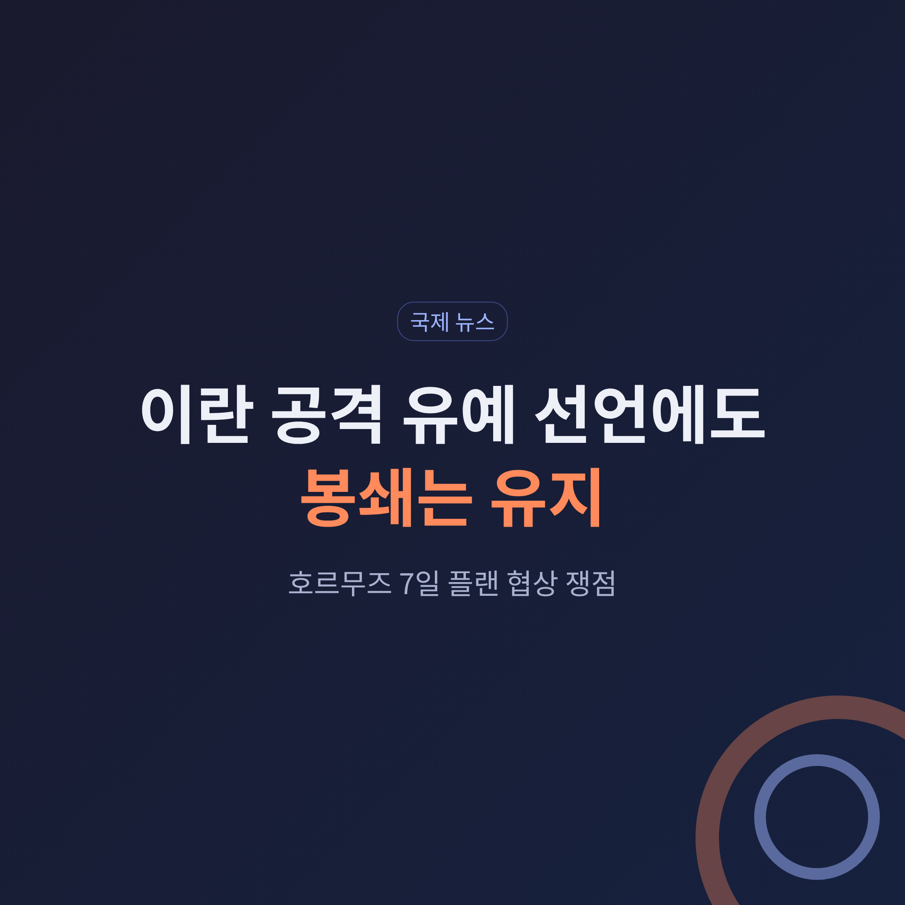
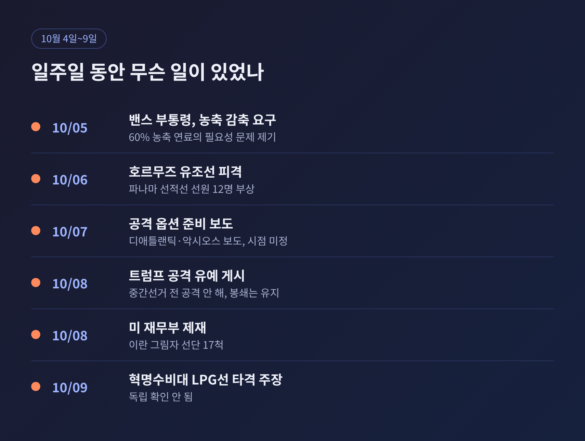
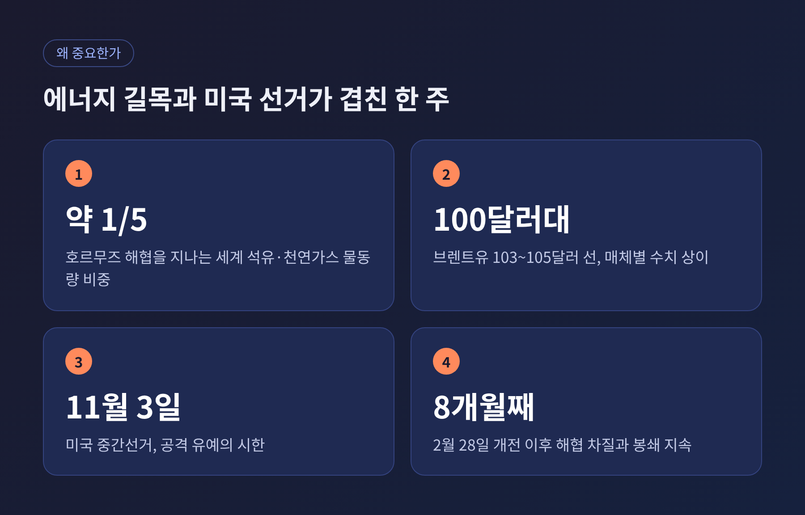
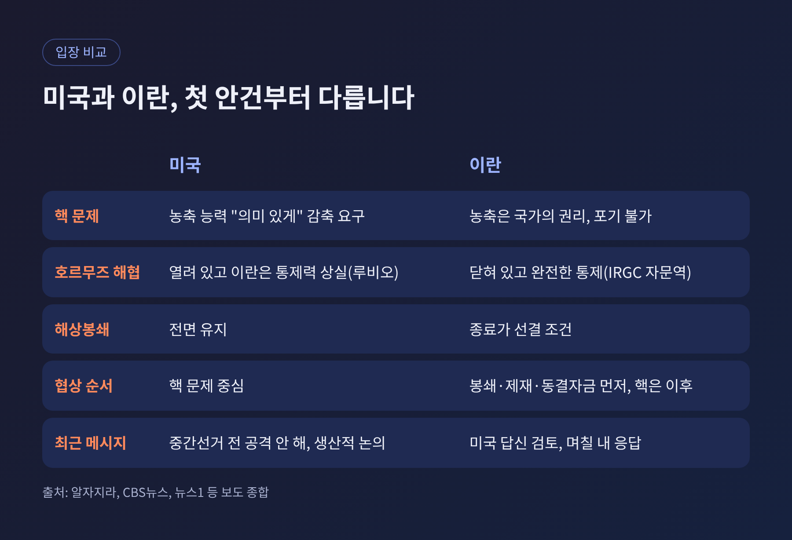
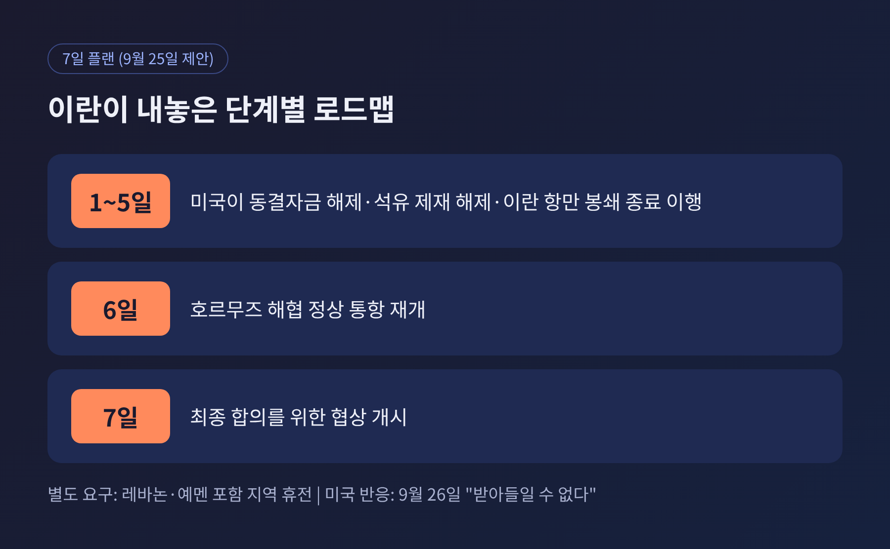

3줄 요약
오늘은 이란 전쟁을 둘러싼 최근 일주일의 움직임을 정리해 보려 합니다. 미국의 공격 유예 발언이 어떤 맥락에서 나왔는지, 호르무즈 해협을 놓고 양측이 무엇을 주장하는지 차례로 살펴보겠습니다. 정리는 알자지라, CBS뉴스, 외교협회(CFR), 국내 언론 보도 등 공개된 자료에 근거했습니다.
트럼프 대통령은 10월 8일(현지시간) 자신의 소셜미디어 트루스소셜에 이렇게 적었습니다. "우리는 중간선거 이전에는 어떤 시점에도 이란을 공격하지 않을 것"이라는 내용입니다. 이란과 "생산적인 논의"를 하고 있다는 말도 함께 남겼습니다.
다만 같은 글에서 해상봉쇄는 "전면 유지"된다고 밝혔습니다. 이란이 경제적·군사적으로 매우 어려운 상황이라는 주장도 이어졌습니다. 그는 전날 밤 호르무즈 해협을 2,200만 배럴의 원유가 지났고, 이란을 오가는 물량은 한 배럴도 없었다고 주장했습니다. 이 수치는 가디언이 독립적으로 검증되지 않았다고 전한 바 있습니다.
발언의 배경에는 며칠 전의 보도들이 있습니다. 10월 7일 디애틀랜틱은 백악관이 국방부에 중간선거 전 타격 옵션을 준비해 달라고 요청했다고 보도했습니다. 악시오스는 국방부가 중부사령부에 대규모 작전 재개를 준비하라고 지시했다고 전했습니다. 다만 시점은 정해지지 않았고, 대통령의 최종 결정도 없었다고 합니다. 백악관 관계자는 CBS뉴스에 "최고사령관은 언제든 모든 옵션을 갖고 있다"고 답했습니다.
즉 이번 발언은 휴전도 평화 합의도 아닙니다. 공격 시점에 대한 한 가지 약속이고, 압박 수단인 봉쇄는 손대지 않겠다는 선언에 가깝습니다. 걸프뉴스 역시 이번 상황이 휴전이나 합의가 아니며 큰 견해차가 남아 있다고 짚었습니다.

호르무즈 해협은 세계 석유와 천연가스 물동량의 약 5분의 1이 지나는 길목입니다. 이 해협이 2월 말 전쟁 발발 이후 7개월 넘게 막히거나 흔들려 왔습니다. 전쟁은 이제 8개월째에 접어들었습니다.
시장은 이 한 줄의 발언에도 민감하게 움직였습니다. CBS뉴스에 따르면 브렌트유는 10월 8일 약 105달러까지 올랐다가 트럼프 대통령의 게시 이후 103달러 선으로 내렸습니다. 오일프라이스닷컴은 한때 110달러에 근접했다가 105달러 안팎으로 내려왔다고 전했는데, 매체마다 수치가 조금씩 다릅니다. 100달러대 초중반에서 출렁이고 있다고 보는 편이 정확하겠습니다.
여기에 날씨까지 변수가 됐습니다. 허리케인 이사이아스로 멕시코만 원유 생산의 약 3분의 2가 멈춘 것으로 보도됐습니다. 유럽도 부담을 안고 있습니다. 유럽 송전·가스 사업자 연합(ENTSOG) 전망으로는 EU 가스 저장률이 73%에서 내년 3월 말 29%까지 낮아질 수 있습니다.
정치적 시계도 맞물립니다. 11월 3일 미국 중간선거를 앞두고 전쟁 장기화와 유가 부담이 선거의 핵심 변수로 거론됩니다. 국내외 언론은 이번 유예 발언을 선거 전 확전 부담을 덜려는 조치로 해석하는 시각을 함께 전했습니다. 다만 이는 해석이며, 백악관이 그렇게 밝힌 것은 아닙니다.

이란의 제안은 9월 25일 유엔총회에서 나왔습니다. 아락치 외무장관이 내놓은 '7일 로드맵'의 골격은 이렇습니다.
이란은 별도로 레바논과 예멘까지 포함한 지역 휴전이 필요하다는 뜻도 전했다고 알자지라는 보도했습니다. 트럼프 대통령은 이튿날 이 제안을 "받아들일 수 없다"고 일축했습니다. 이란이 "너무 크게 지고 있어서" 합의를 원한다는 말도 덧붙였습니다.
그 뒤 분위기는 엇갈렸습니다. 10월 4일 갈리바프 국회의장은 이슬라마바드 양해각서에 근거한 7개 조건이 충족되기 전에는 해협이 열리지 않는다고 밝혔습니다. 10월 5일 페제시키안 대통령은 협상이 "무의미"하다고 말했습니다. 과거 협상 뒤에 공격을 받았다는 불신이 배경이라는 설명입니다. 반면 아락치 외무장관은 10월 8일 중재자를 통해 메시지를 주고받고 있고, 미국의 답신을 검토해 "며칠 내" 응답하겠다고 밝혔습니다. 같은 정부 안에서도 온도 차가 있는 셈입니다.
이란 측은 핵 문제에서도 물러서지 않았습니다. 에슬라미 원자력청장은 우라늄 농축을 포기하지 않겠다고 말했습니다. 농축을 국가의 권리로 본다는 취지입니다.
미국 쪽 메시지의 중심에는 핵이 있습니다. 밴스 부통령은 10월 5일 알래스카에서 로이터 인터뷰를 통해 종전을 원한다면 이란이 농축 능력을 "의미 있게" 줄여야 한다고 말했습니다. "핵무기를 원하지 않는다면 왜 60% 농축 연료가 필요한가"라는 질문도 던졌습니다. 국제원자력기구(IAEA) 기준으로 60%는 무기급인 약 90%에 못 미치지만, 일반 원전 연료보다는 훨씬 높은 수준입니다.
루비오 국무장관은 "이란은 핵무기를 가질 수 없다"는 점을 거듭 강조했습니다. 일부 전문가는 밴스 부통령의 표현이 '농축 전면 포기'에서 '감축'으로 수위가 다소 낮아졌다는 신호일 수 있다고 봤습니다. 다만 확정된 변화로 보기는 어렵습니다.
결국 쟁점은 순서입니다. 이란은 봉쇄 해제와 제재 완화, 해협 재개방을 먼저 하고 핵 협상은 그 뒤에 하자는 입장입니다. 미국은 핵 문제를 앞세웁니다. 이란 대변인은 미국이 핵 협상에 집중하는 반면 자국의 주된 목표는 해협 재개방이라고 설명했습니다. 두 나라가 같은 테이블에 앉더라도, 첫 번째 안건부터 다른 셈입니다.

현장의 상황을 두고도 주장이 갈립니다. 루비오 국무장관은 10월 7일 해협이 열려 있고 이란은 통제력을 "완전히 상실했다"고 말했습니다. 이란 혁명수비대(IRGC) 자문역은 해협이 닫혀 있고 이란이 "완전한 통제"를 갖고 있다고 맞섰습니다.
수치로 보면 중간쯤의 그림이 그려집니다. 시장정보업체 켑러는 9월 이란을 제외한 걸프 원유 흐름이 개전 전의 81% 이상이라고 분석했습니다. 쉘의 최고경영자는 개전 전의 약 80% 수준이라고 언급했습니다. 정상은 아니지만 완전 차단도 아닌 상태입니다.
그 사이에도 충돌은 이어졌습니다. 영국 해상무역운영기구(UKMTO)는 10월 들어 7일까지 해협에서 9건의 공격이 있었다고 집계했습니다. 10월 6일에는 파나마 선적 유조선이 미상의 발사체에 맞아 선원 12명이 다쳤습니다. 10월 8일 미 재무부는 이란의 '그림자 선단' 선박 17척을 제재했고, 10월 9일 혁명수비대는 액화석유가스(LPG) 운반선을 "불법 항로"에서 타격했다고 주장했습니다. 이 주장은 독립적으로 확인되지 않았습니다.
전쟁의 큰 흐름도 짚어 둘 만합니다. 2월 28일 미국과 이스라엘이 이란을 공격했고, 4월 13일 미 해군이 이란 항만 봉쇄를 시작했습니다. 6월에는 양해각서 서명으로 잠시 긴장이 누그러졌지만, 이행은 안보 보장 문제로 정체됐고 양측은 서로 위반을 주장해 왔습니다. 이란이 7일 플랜을 6월 합의의 연장선으로 내세우는 이유도 여기에 있습니다. 중동연구소 분석가는 이 제안이 6월 양해각서와 거의 같아 이란도 거부를 예상했을 것이며, 양국 청중을 향한 메시지 성격이 강하다고 평가했습니다.
주변 전선도 불안합니다. 예멘 후티 반군의 사우디 리야드 공항 공격 이후 일부 항공편이 취소됐고, 트럼프 대통령은 사우디의 후티 공습에 동참하는 방안을 검토하겠다고 말했습니다. 다만 이 사건의 인명 피해 규모는 매체마다 보도가 달라 이 글에서는 수치를 적지 않습니다.

가장 가까운 분기점은 이란의 공식 응답입니다. 아락치 외무장관이 "며칠 내"라고 한 만큼, 이르면 이번 주 안에 방향이 어느 정도 드러날 수 있습니다. 푸틴 대통령이 10월 8일 페제시키안 대통령에게 종전을 돕겠다는 뜻을 전했고, 크렘린은 이란의 입장을 트럼프 대통령에게 전했다고 밝혔습니다. 중재 채널이 여럿 열려 있다는 뜻입니다.
낙관만 하기는 어렵습니다. 첫째, 공격 유예는 11월 3일까지라는 시한이 붙은 약속입니다. 트럼프 대통령은 선거 이후의 계획을 밝히지 않았고, 과거에는 선거 뒤 폭격 강화를 시사한 적이 있다고 국내 언론은 전했습니다. 둘째, 군사력 평가가 엇갈립니다. 헤그세스 국방장관은 이란의 군수산업 역량을 파괴했다고 주장했지만, 블룸버그가 인용한 서방 관리들은 이란이 미사일·드론 공장을 보존해 전력을 보충할 수 있다고 봤습니다. 양쪽 모두 자신에게 유리한 평가를 내놓고 있어, 실제 힘의 균형은 외부에서 가늠하기 어렵습니다.
셋째, 인도적 비용입니다. 인권단체 HRANA는 이란 민간인 사망자를 1,701명으로 집계했고, CFR은 완전한 통계가 없다고 밝혔습니다. 피해가 클수록 양측이 물러서기 어려워지는 구조입니다.
시나리오는 대략 세 갈래입니다. 이란이 일부 수정안을 내며 협상이 이어지는 경우, 순서 문제에서 평행선을 달리다 선거 이후 다시 군사 긴장이 높아지는 경우, 해협에서의 우발적 충돌이 일정을 흔드는 경우입니다. 어느 쪽이 될지는 현재로서는 알 수 없습니다.
정리하면 이렇습니다. 이번 일주일의 변화는 '공격 시점의 유예'이지 '전쟁의 종료'가 아닙니다.
봉쇄와 해협, 핵 문제라는 세 개의 매듭은 그대로 남아 있고, 어느 것을 먼저 풀지를 두고 양측이 맞서고 있습니다.
숫자와 발언은 매체마다, 진영마다 달랐습니다. 그래서 저는 발표 하나하나보다 다음 주 이란의 답신이 어떤 순서를 제안하는지를 지켜보는 편이 낫다고 생각합니다. 유가 100달러 시대가 길어질지, 협상 테이블이 다시 차려질지는 그 한 장의 답신에서 윤곽이 잡힐 것입니다.